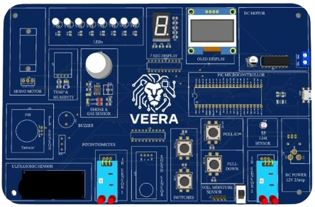
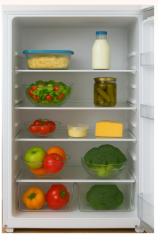

Microcontroller Board
Sends temperature values via serial to monitor food freshness.
● Disconnected
Temperature Sensor Controls
Current Temperature
--°C
Threshold: 5°C
Refrigerator Status

Freshness: 100%
Food quality depends on maintaining proper temperature below threshold.